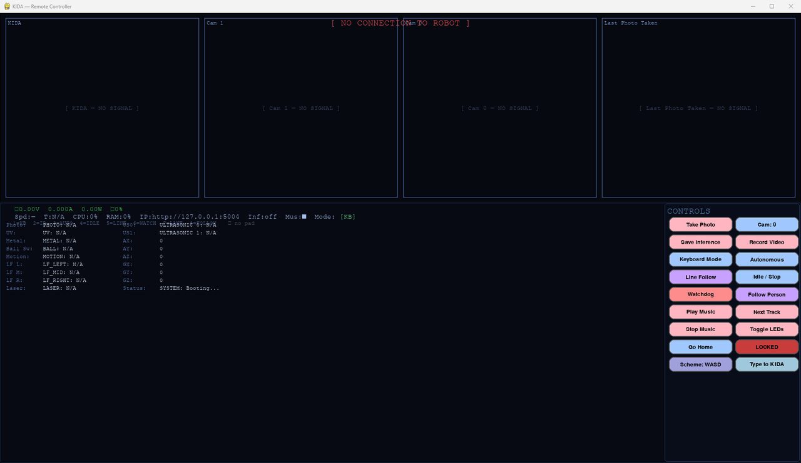
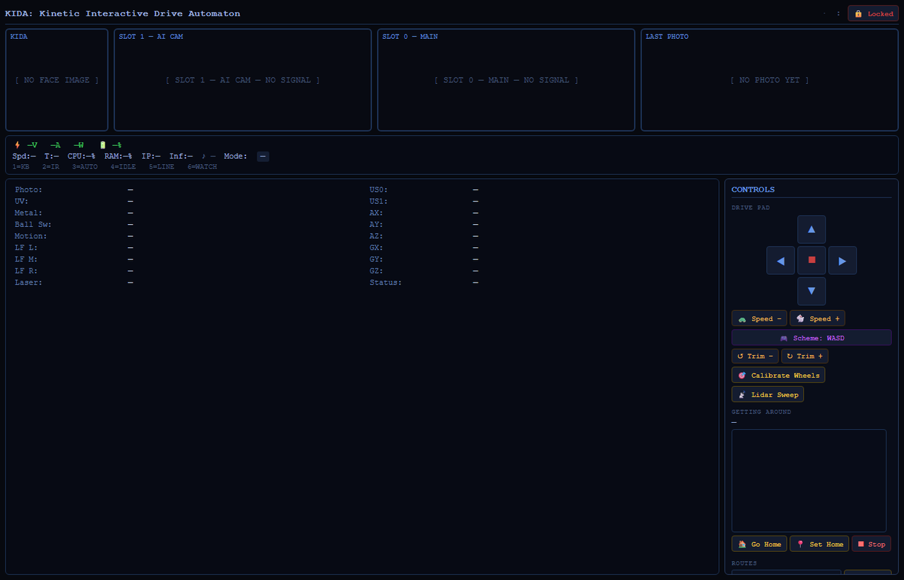

Overview
Edge AI on tracks
13 TOPS at the edge
The Hailo-8L runs real-time object detection and tracking on the robot itself.
Hybrid dual cameras
A night-vision camera and the IMX500 AI camera work side by side for round-the-clock awareness.
Local LLM
Whisper listens, Ollama thinks and Piper speaks, all on-device and private.
Autonomous driving
Obstacle avoidance, LIDAR sweeps stamped with her pose, person follow that detours around things, and going home.
Faces she knows
Say “remember my face” and she greets you by name next time. Only face fingerprints are stored, never pictures.
Record & patrol
Teach her a route, replay it or patrol it, and she'll tell you if something has changed along the way.
Inner life
Someone at home
KIDA has the same inner life as DREAM, ported from dream_mind and adapted to a robot body (without dreaming, which would cost the Pi too much). It's optional: if it can't load, KIDA runs exactly as before.
Mood & needs
Valence and arousal, a wandering good-day/bad-day temperament, and needs: loneliness, curiosity, feeling on edge and sleep pressure.
A memory graph
Every conversation becomes an episode. Recall is associative and mood-coloured, and memories fade unless they matter.
Feeling her body
Bumps, near tip-overs, rough rides, her battery and her Pi's load and temperature all reach her mood. She says “ow”.
Glances
About once a minute she glances through cam-1. Nothing is saved, only what she noticed.
Dozing off
After a quiet spell she sleeps in IDLE mode and tidies her memories. Talking to her, driving her or a mode change wakes her.
Speaking first
A reminder, a question, missing you, a bump. With restraint: never at 3 am, never to an empty room.
Boundaries
She won't pretend to be human, says when something stings, and drops everything for anyone in danger.
Your control
“Forget that”, “forget everything”, “stop talking on your own”. Stop, lock and quit are always honoured.
Today
Distance driven, who she saw, bumps and her mood through the day, summarised on the web page and written into her journal after 9 pm.
The web dashboard has a Mind panel (/mind), and both PC controllers and the Pi HUD show her mood, needs and latest thought. Press T to type to her.
Controls
Two ways to drive
WASD vectoring
W/S forward and back, A/D rotate.
Tank-style banks
Q/A drive the left bank, W/S the right.
Keys
| Key | Action |
|---|---|
| X | Speed control |
| TAB / U | Cycle modes / user control mode |
| C / V | Take a photo / record video |
| K / L | Light effects / lights on-off |
| H | Go home |
| T | Type to KIDA |
| M / Space | Play music / stop music |
Network: SSID NORA, password 12345678. Connect through RIFT on port 5004.
Driven by NORA
NORA can drive KIDA-01 through her IR transmitter: Samsung-format IR at address 0x0DA4, with the fleet link’s commands 0x48–0x4F (drive, stop, obstacle, manual, speed). The IR Arduino (arduino01) prints each command as the IR line the Pi already reads (IRforward, IRrelease, IR3…), so nothing on the Pi changed. Driving switches her into IR Remote mode; she stops once the link has been quiet for 500 ms.
Talking, in Brainfuck
Every phrase is a Brainfuck program that prints its words — hello is ++++++++[>+++++++++++++<-]>.+. → hi — and a robot says it by beeping the program on its buzzer, one tone per symbol, in its own voice. RIFT runs the conversations and asks each robot to speak with GET /chirp?u=<0-13> (phrases 0–6, replies 7–13). KIDA’s voice is the brightest: server.py passes TALK:<u> to the motor Arduino, which beeps it on D8, only while she’s standing still (the buzzer shares a timer with the left motor).
Hardware
What she's built from
| Compute | |
|---|---|
| Main board | Raspberry Pi 5 (4 GB) |
| AI accelerator | Hailo-8L (13 TOPS) on an NVMe + AI HAT |
| Storage | NVMe SSD |
| Microcontrollers | RGBduino Jenny (DEV0), Arduino UNO (DEV1) |
| Drive & power | |
|---|---|
| Chassis | Robot tank chassis |
| Motors | 2× 12 V DC via L298N |
| Motor battery | 3S 21700 (12.6 V) |
| Compute battery | 3S 18650 via Pi UPS |
| Regulator | LM2596S (12 V → 11.5 V) |
| Senses | |
|---|---|
| Cameras | Pi Night Vision + Pi AI Camera (IMX500) |
| Distance | 2× HC-SR04 (one on a servo), ToF laser |
| Ground | 3-channel line tracker |
| Other | Ball switch, IR receiver, UV, LDR, PIR |
| Audio & control | |
|---|---|
| Output | Pi speakers |
| Input | USB microphone |
| Controllers | PC, Android, iPhone, wireless keyboard, IR remote |
Ground loop warning: all modules must share a common GND. Without it you get erratic motors and noisy sensors.
Pinout
| DEV0 (drive) | Pin |
|---|---|
| Right motor PWM / DIR1 / DIR2 | D6 / D7 / D9 |
| Left motor PWM / DIR1 / DIR2 | D3 / D4 / D5 |
| Servo | D10 |
| Ultrasonic fixed TRIG / ECHO | A1 / A0 |
| Ultrasonic servo TRIG / ECHO | A2 / A3 |
| NeoPixel strips 1 / 2 | D13 / D12 |
| Button / buzzer | D2 / D8 |
| VL53L0X SDA / SCL | A4 / A5 |
| DEV1 (senses) | Pin |
|---|---|
| IR receiver | D5 |
| Front / back lights (MOSFET) | D2 / D3 |
| Metal sensor | A0 |
| Photoresistor | A1 |
| UV sensor | A2 |
| Ball switch | A3 |
| PIR | D4 |
| Line follower L / M / R | D8 / D10 / D9 |
Setup
Bringing her up
Raspberry Pi OS (Bookworm) is recommended. The full guide in the README covers each piece; these are the essentials.
# AI camera models and Hailo runtime $ sudo apt update && sudo apt full-upgrade $ sudo apt install imx500-models hailo-all $ hailortcli fw-control identify # Local language model $ sudo snap install ollama $ ollama pull gemma3:4b-it-qat # Python environment, speech in and out $ python3 -m venv ~/kida-venv && source ~/kida-venv/bin/activate $ pip install -r requirements.txt $ pip install git+https://github.com/openai/whisper.git piper-tts
Then run her:
$ source venv/bin/activate $ python scripts/main.py
Hailo not detected? A DKMS module may have failed to build. Pin back to 4.19, which has stable kernel module support, and hold the kernel packages. Also enable PCIe Gen 3 for the AI HAT with dtparam=pciex1_gen=3 in /boot/firmware/config.txt.
To start her on boot, the README has a ready-made systemd service (recommended), plus crontab and desktop autostart options.
Screens
The controllers
Captured without a robot connected, so live values show their offline state.


Music & voice
What KIDA-01 plays and says
Her music player's tracks from audio/music/, and her spoken mode announcements.